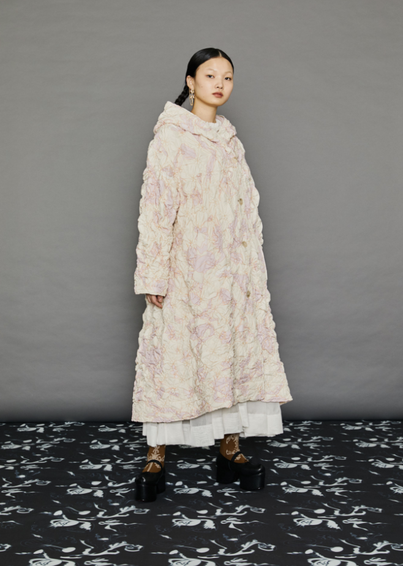
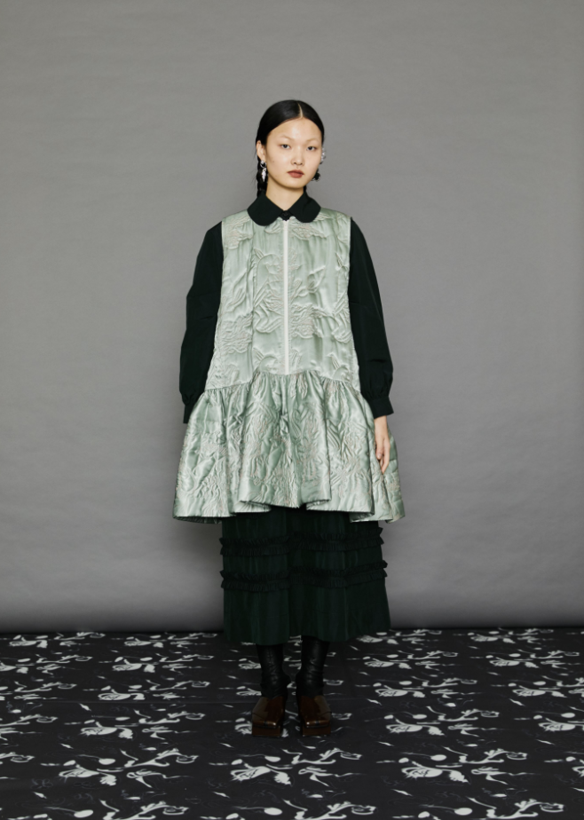
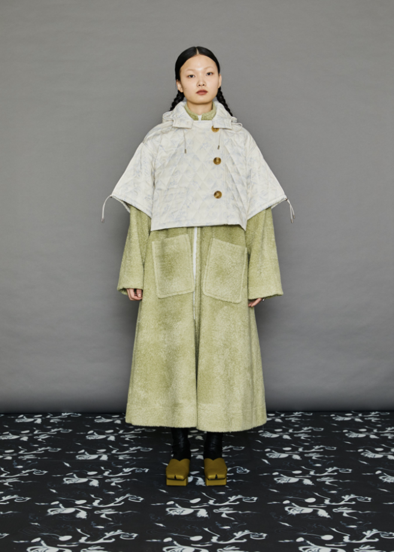
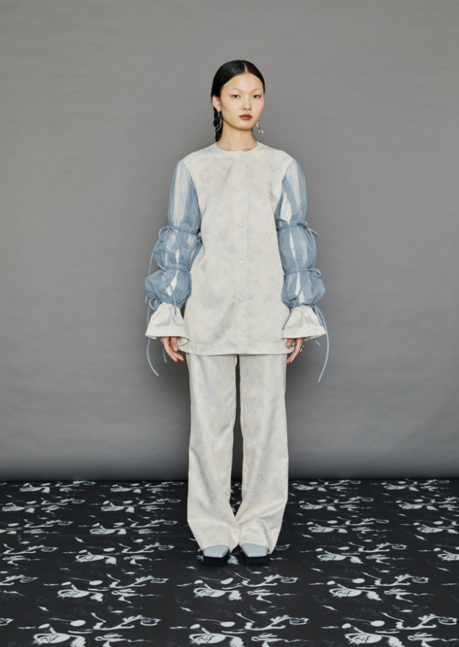

20FW Night of Knight



Minju Kim has become known for her signature style, which combines a youthful playfulness and avnant-garde haute couture. Her imaginative collections combine bold silhouettes with feminine characteristics and overarching element of joyfulness.
